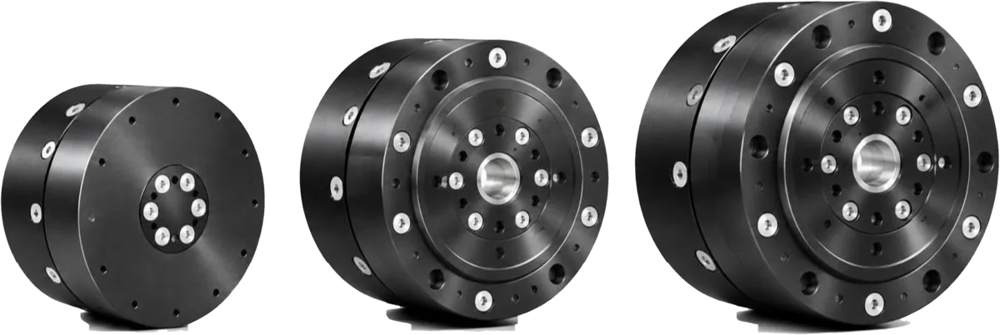
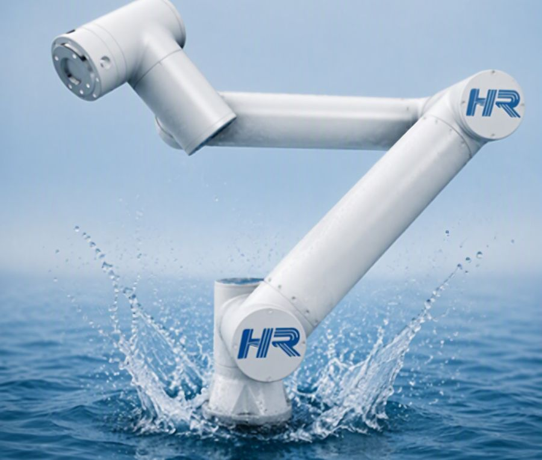
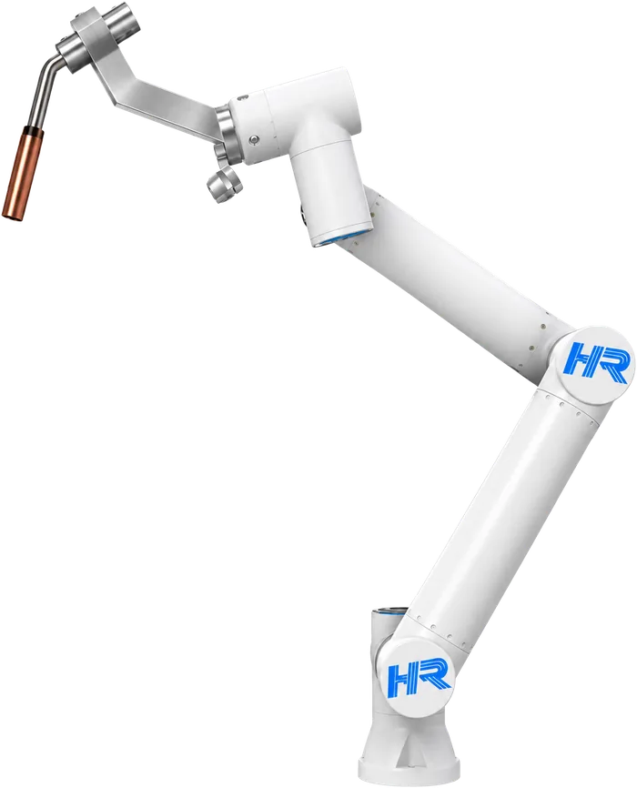
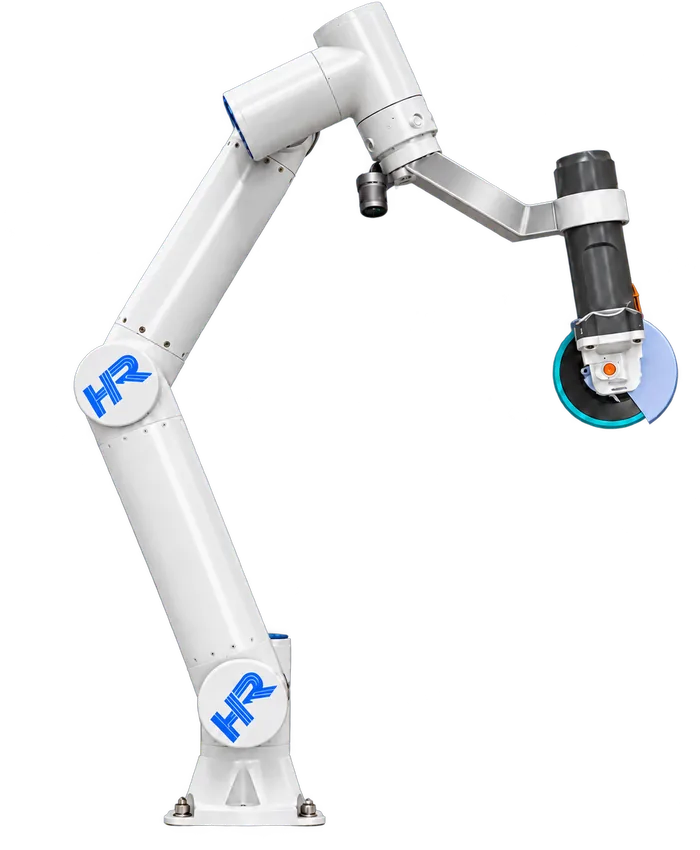
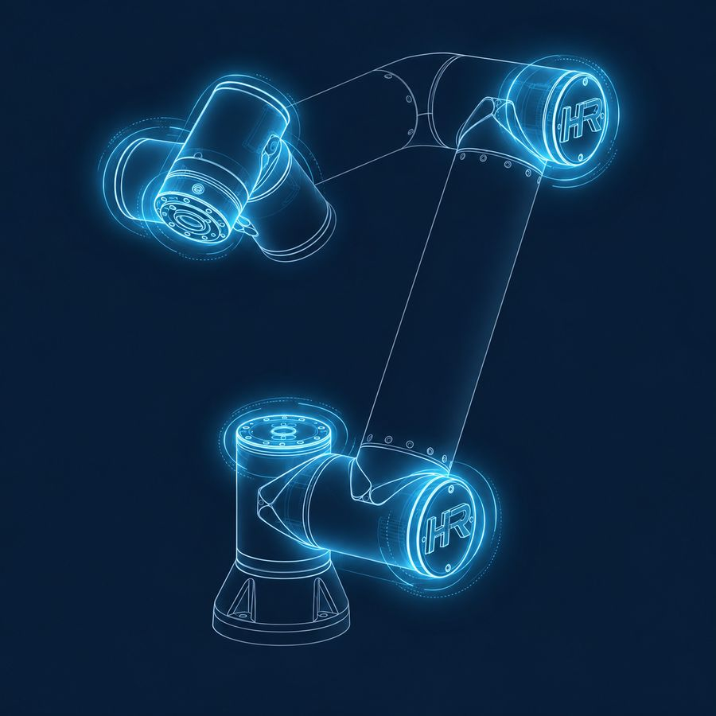
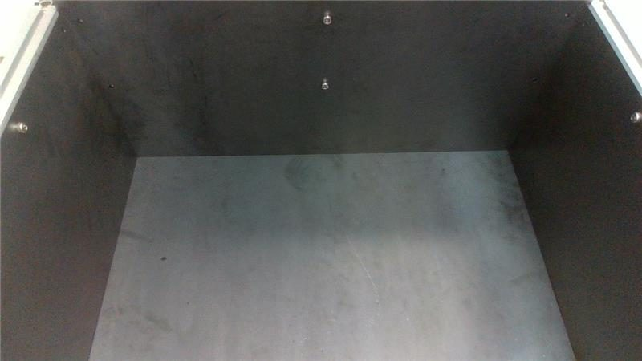
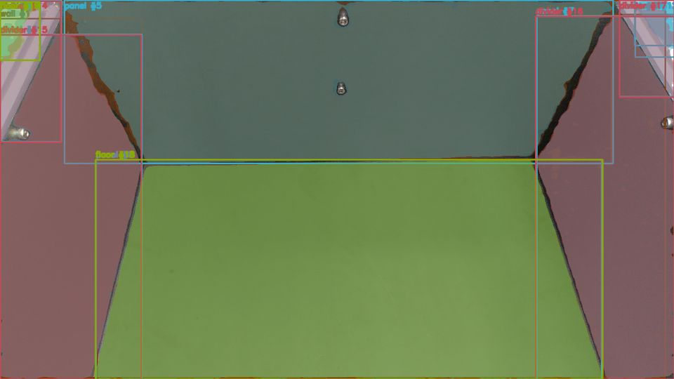
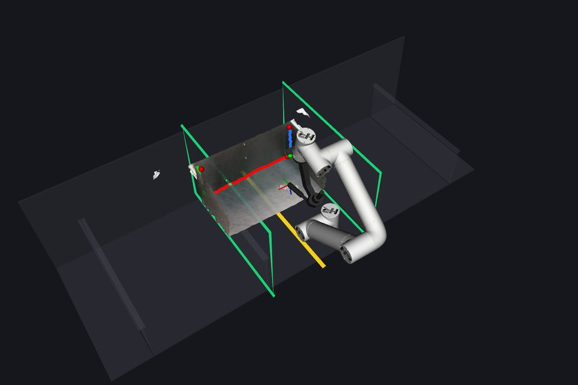
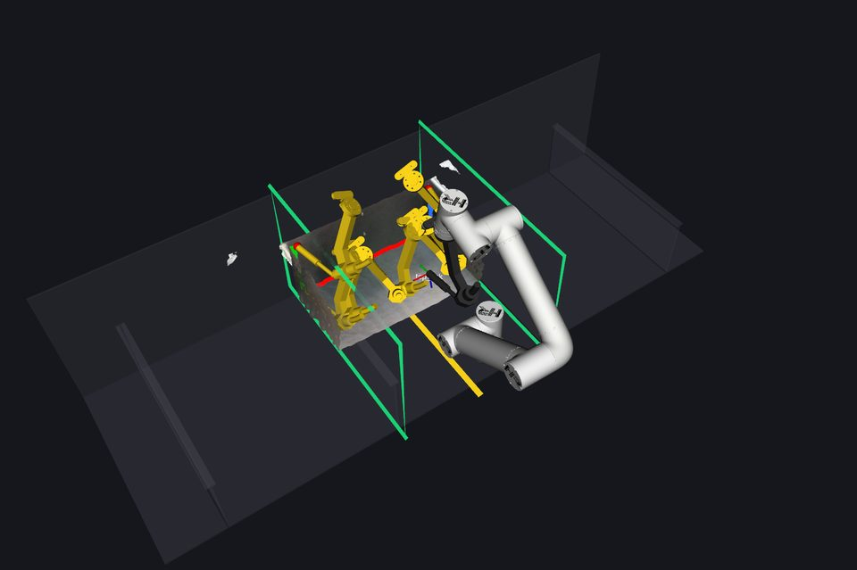
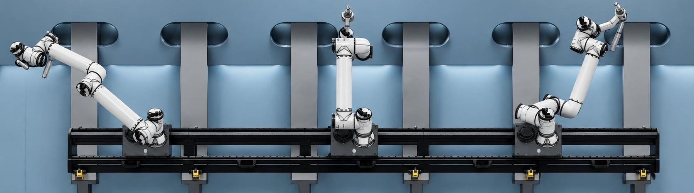

01 · HA SERIES WATERPROOF ACTUATOR
HA 시리즈 방수 액추에이터
감속기 일체형 관절 모듈에 자체 개발 드라이버와 IP67 방수 하우징을 적용했습니다.
- IP67
- 48V 단일 입력
- HA-60 · 80 · 90
제품 라인업
모든 관절에 자체 설계한 방수 액추에이터를 쓰고, 같은 인식 모델과 로봇 플랫폼으로 용접에서 사상까지 이어갑니다.


01 · HA SERIES WATERPROOF ACTUATOR
감속기 일체형 관절 모듈에 자체 개발 드라이버와 IP67 방수 하우징을 적용했습니다.

02 · AUTONOMOUS WELDING ROBOT
처음 보는 블록도 추가 학습이나 티칭 없이, 촬영 한 번으로 용접 경로까지 만듭니다.

03 · AUTONOMOUS GRINDING ROBOT
용접 로봇과 같은 인식 모델과 로봇 플랫폼으로, 용접 후 비드 사상까지 이어갑니다.

| 모델 | HA-60 | HA-80 | HA-90 |
|---|---|---|---|
| 보호 등급 | IP67 | IP67 | IP67 |
| 정격 토크 | 5 Nm | 12 Nm | 55 Nm |
| 피크 토크 | 12 Nm | 28 Nm | 160 Nm |
| 정격 속도 | 300 rpm | 150 rpm | 120 rpm |
| 감속비 | 8 : 1 | 8 : 1 | 8 : 1 |
| 백래시 | ≤ 10 arcmin | ≤ 10 arcmin | ≤ 10 arcmin |
| 입력 전압 · 제어 | 48 V · FOC | 48 V · FOC | 48 V · FOC |
| 작동 온도 | -20~50 ℃ | -20~50 ℃ | -20~50 ℃ |
| 무게 | 약 500 g | 약 1,000 g | 약 2,100 g |
기술
블록이 바뀌어도 로봇이 스스로 용접선을 찾습니다. 그래서 티칭이 필요 없습니다.

RGB-D 카메라 한 번 촬영으로 형상과 깊이를 얻습니다.

파운데이션 모델로 바닥면, 론지, 후판을 나눕니다.

부재 경계에서 용접선을 자동으로 뽑아냅니다.

로봇 경로를 자동으로 만들고 바로 용접합니다.
용접 로봇과 같은 인식 모델로 비드를 읽고 그라인딩 경로를 만듭니다.
용접이 끝난 부위의 비드 형상을 측정합니다.
비드 형상에 맞춰 그라인딩 경로를 만듭니다.
그라인더 엔드이펙터로 비드를 제거합니다.
사상 후 표면을 다시 스캔해 확인합니다.
시연
산출한 경로를 따라 움직이는 로봇팔
왜 한일로보틱스인가

블록 안에서 레일을 따라 이동하며 작업하는 구성
실내 공장용 로봇은 야드의 비와 분진에 취약합니다.
IP67 방수 액추에이터
블록 형상이 매번 달라 경로를 다시 잡아야 합니다.
티칭 없는 용접선 자동 인식
비드 사상은 여전히 사람이 그라인더로 합니다.
같은 플랫폼의 자율 사상 로봇
도입 상담과 PoC 파트너 문의를 받습니다. 초기 설비 투자 없는 월 구독(RaaS)으로도 시작할 수 있습니다.